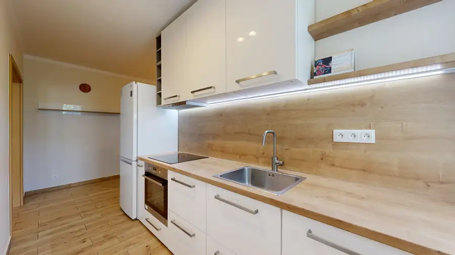
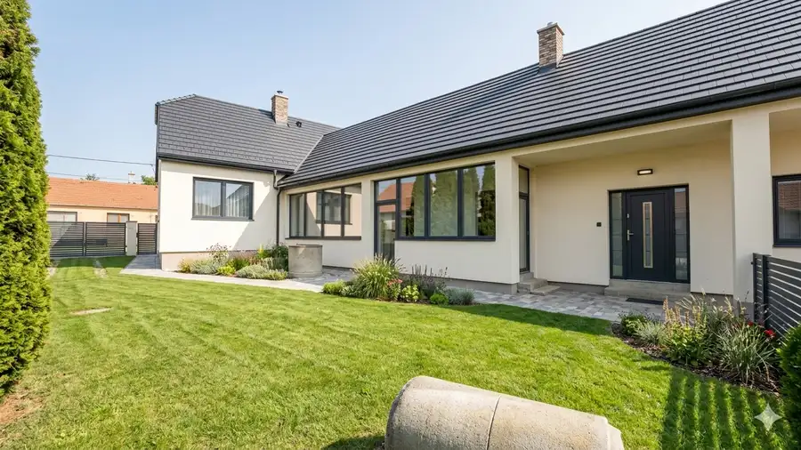
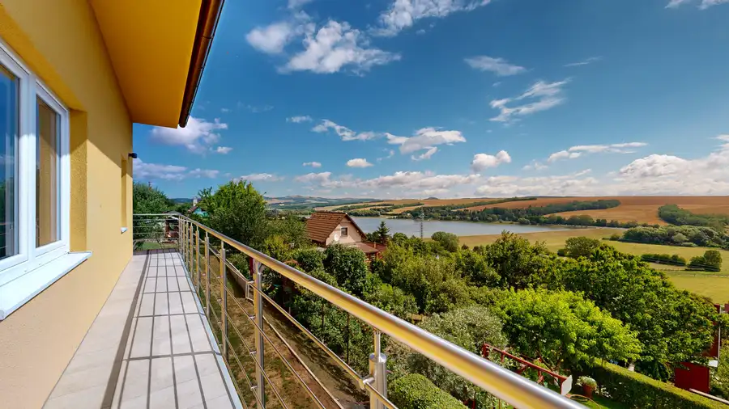

Priestranný 2-izbový byt s loggiou v lokalite plnej zelene
Zavar
- Dispozícia2-izbový
- Plocha54.09 m²
- StavNovostavba
- VlastníctvoOsobné
- Energetická triedaB
O nehnuteľnosti
Ponúkame na predaj priestranný, kompletne vybavený 2-izbový byt s výbornou dispozíciou a nízkymi prevádzkovými nákladmi v pokojnej zelenej lokalite v obci Zavar (v tesnej blízkosti Trnavy).Bytový dom z roku 2006 prešiel v roku 2024 kompletnou revitalizáciou. Nachádza sa v komornom a tichom vchode, kde je celkovo iba 8 bytov (2 byty na poschodí), čo zaručuje dostatok súkromia a pokojné bývanie.Nezmeškajte pozrieť byt online - https://my.matterport.com/show/?m=ZijAkEAxicmZákladné parametre:Užitková plocha: 54,09 m² + loggia 5,86 m²Poschodie: 1. poschodie z 3 (nie prízemie), bez výťahuOrientácia: Západ kuchňa s obývačkou, spálňa je orientovaná na východK dispozícii od: 02 / 2027Dispozícia a vybavenie:Dispozícia: Vstupná chodba, samostatná obývacia izba so vstupom na priestrannú loggiu, samostatná kuchyňa, samostatná spálňa, kúpeľňa s vaňou, samostatné WC a praktická technická miestnosť.Kuchyňa: Kuchynská linka vyhotovená na mieru značky Dalno.Komfort: V byte je nainštalovaná klimatizácia a vonkajšie žalúzie.Kúrenie: Vlastný plynový kotol, ktorý zabezpečuje vykurovanie (radiátory) aj ohrev teplej vody.Zariadenie: V byte je možné po dohode ponechať nábytok a vybavenie.Spoločné priestory: Na prízemí bytového domu sa nachádza kočíkáreň prislúchajúca pre daný vchod.Mesačné náklady:Vďaka vlastnému kotlu a revitalizácii domu má byt veľmi nízke režijné náklady:Správca: 60 €Plyn: 40 €Elektrina: 30 €Spolu: iba 130 € / mesiac Cena bytu: 164 990 €Parkovanie: K bytu je možné dokúpiť veľké vonkajšie parkovacie státie o výmere 18 m² (rozmery cca 4,8 × 3,8 m) v cene 7 990 €.Máte záujem o obhliadku alebo viac informácií? Neváhajte ma kontaktovať!Tomáš Šibal0908 685 804sibal@casmar.sk
Parametre
| Cena vrátane energií | Nie |
|---|---|
| Druh | 2 izbový byt |
| Dátum zverejnenia | 25. 9. 2026 |
| Energetický certifikát budovy | B |
| Stav nehnuteľnosti | Novostavba |
| Typ | Predaj |
| Vlastníctvo | Osobné |
| Úžitková plocha | 54.09 m² |
Kde to je


Mohlo by Vás zaujímať

BytNové10 174 990 €Kompletne zrekonštruovaný a zariadený 2-izbový byt v top lokalite Piešťan (Teplická ul.) Piešťany 2-izbový49 m² Hľadáte bývanie v Piešťanoch, kde nemusíte riešiť žiadne dodatočné investície ani prerábky? Chcete bývať na skok od centra, no zároveň v obklopení…
DomNové10 144 990 €VIRTUÁLNA PREHLIADKA / Priestranný rodinný dom s veľkým potenciálom Boleráz 133 m² Hľadáte nehnuteľnosť, ktorú si pretvoríte presne podľa svojich predstáv? Ponúkame na predaj samostatne stojaci rodinný dom v obci Boleráz,…
Chalupa, rekreačný domčekNové10 164 990 €Novostavba chaty s výhľadom na Kunovskú priehradu – bezpečie a komfort Senica 95 m² Hľadáte únik z mesta, kde sa spája moderné bývanie s relaxom v prírode? Ponúkame Vám na predaj novostavbu chaty v prestížnej a vyhľadávanej…